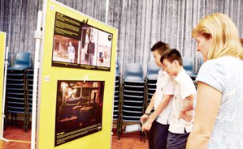

Global & Social Thinking Skills

Learning Aims
GTS Aims to:
-
•Help students to deal with difficult personal, social and global questions
-
•Give students the knowledge, skills and understanding to play an effective role in society at local, national and international levels
-
•Develop intercultural awareness
-
•Increase creative thinking
-
•Develop critical thinking skills
-
•Enhance students capacity for problem solving and decision making in both the present and future
-
•Guide reflection and lead from knowledge to thoughtful action.
-
•Develop a healthy perspective on personal, social and global difficulties
-
•Prepare students for the challenges of the IB extended essay and Theory of Knowledge
Course Contents
Personal Development:
-
•Online relationships
-
•Life in a connected culture
-
•Managing Stress and time
-
•Sexual Health and relationships Work Experience and career choices
-
•Drug Education
Global and Social Issues
-
•Critical Thinking Skills Media analysis Homophobia Globalisation
-
•Fair Trade
-
•Introduction to Theory of Knowledge
Assessment
The Assessment will:
-
•Be skills based
•Be informed by the IB middle years criteria based model •Include peer and self- evaluation
•Take place over the course of the programme
Assessment allows students to demonstrate achievement. School assessment and reporting for GTS plays a major role in the development of the student’s skills, knowledge and understanding in dealing with issues. It also benefits curriculum development which is continuous and responsive.
Assessment tasks will be varied. Possible tasks include:
-
•Open-ended, problem-solving activities
-
•Investigations
-
•Organized Debates
-
•Presentations
-
•Film
-
•Analysis and Reflection